ML学习笔记 #02 GNN
图神经网络 | Graph Neural Network
1 Why gnn?
在实际应用中， 很多数据是图结构的， 比如知识图谱、 社交网络、 分子网络等。但前馈网络和反馈网络很难处理图结构的数据
考虑 entity feature 的同时还考虑 entity 之间 的空间特征，即 relation 和 structure
困难点在于：
CNN 的局部平移不变性，可以很好运用于图片中的规整的二维矩阵 image grids。所谓的「局部平移不变性」即通过卷积操作类似于对「计算区域内的中心节点和相邻节点进行加权求和」，无论卷积核平移到图片中的哪个位置都可以保证运算结果的一致性。而图是任意大小的复杂结构，并非是规整的（每个节点的周围邻居数不固定），不能直接使用 CNN。
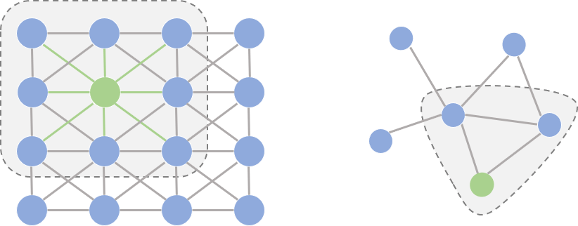
2 前置知识 | Preliminary
2.1 定义 | Basic Definitions
首先对图中节点、边进行定义，主要包括邻接矩阵和度矩阵。
- Graph: \(G=(V, E), N=|V|\)
- \(A \in \mathbb{R}^{N \times N}\)：「邻接矩阵（Adjacency Matrix）」, 表示节点之间连接的权重大小，也可以写作 \(W\)
\[ A_{i, j}=0 \text { if } e_{i, j} \notin E \text {, else } A_{i, j}=w(i, j) \]
- \(D \in \mathbb{R}^{N \times N}\): 「度矩阵（Degree Matrix）」，为对角矩阵，表示当前节点的度数之和
\[ D_{i, j}=\left\{\begin{array}{ll} d(i) & \text { if } i=j \quad \text { (Sum of row } i \text { in } A) \\ 0 & \text { if } i \neq j \end{array} \quad\right. \]
\(f: V \rightarrow \mathbb{R}^N\)：「图信号（signal on graph - vertex）」 \(f(i)\) denotes the signal on vertex \(i\)
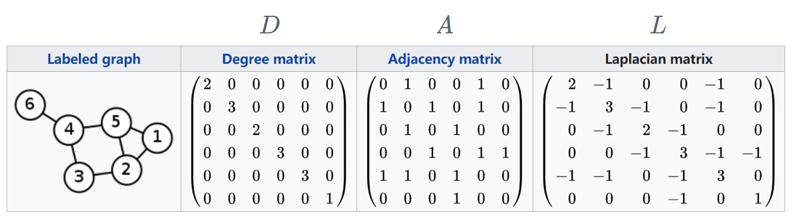 image-20221121194423741 \(L=D-A, L \geqslant 0\)：「拉普拉斯矩阵（Laplacian Matrix）」是半正定对称矩阵
- \(L\) 是对称的，实对称矩阵一定可以用正交矩阵进行正交相似对角化： \(L=\Phi \Lambda \Phi^{-1}=\Phi \Lambda \Phi^{\mathrm{T}}\)
- 矩阵特征值\(\Lambda=\operatorname{diag}\left(\lambda_0, \ldots, \lambda_{N-1}\right) \in \mathbb{R}^{N \times N}\)一定非负
- 根据实对称矩阵不同特征值所对应的特征向量必定正交。 \(\Phi=\left[\phi_0, \ldots, \phi_{N-1}\right] \in \mathbb{R}^{N \times N}\)是正交矩阵 \(\lambda_l\) 代表频率， \(\phi_l\) 代表 \(\lambda_l\) 对应的基向量

- 通过图信号非0向量 \(f\) 计算可得到光滑程度。根据「若对于每个非零实向量\(X\)，都有 \(X'AX\ge0\)，则称A为半正定矩阵」的定理，可知矩阵 \(L\) 是半正定的。
\[ \begin{aligned} f^{T}Lf &=f^{T}(Df - Af) \\ &=\sum_{v_i \in V} f\left(v_i\right) \sum_{v_j \in V} w_{i, j}\left(f\left(v_i\right)-f\left(v_j\right)\right) \\ &=\sum_{v_i \in V} \sum_{v_j \in V} w_{i, j}\left(f^2\left(v_i\right)-f\left(v_i\right) f\left(v_j\right)\right) \\ &=\frac{1}{2} \sum_{v_i \in V} \sum_{v_j \in V} w_{i, j}\left(f^2\left(v_i\right)-f\left(v_i\right) f\left(v_j\right)+f^2(j)-f\left(v_j\right) f\left(v_i\right)\right) \\ &=\frac{1}{2} \sum_{v_i \in V} \sum_{v_j \in V} w_{i, j}\left(f\left(v_i\right)-f\left(v_j\right)\right)^2 \ge0 \quad \begin{array}{l} \text { "Power" of signal variation } \\ \text { between nodes, i.e., } \\ \text { smoothness of graph signal } \end{array} \end{aligned} \]
2.2 拉普拉斯算子 | Laplacian
图拉普拉斯矩阵\(L\) 为什么要这样定义的？首先得了解什么是拉普拉斯算子。
在数学中，拉普拉斯算子 (Laplacian) 是由欧几里得空间中的一个函数的梯度的散度给出的微分算子，通常有以下几种写法: \(\Delta, \nabla^2, \nabla \cdot \nabla\) 。所以对于任意函数 \(f\) 来说，其拉普拉斯算子的定义为: \[ \Delta f=\nabla^2 f=\nabla \cdot \nabla f\\ =\sum_{i=1}^n \frac{\partial^2 f}{\partial x_i^2} \]
以一维空间为例： \[ \begin{aligned} \frac{\partial^2 f}{\partial x_i^2} &=f^{\prime \prime}(x) \\ & \approx f^{\prime}(x)-f^{\prime}(x-1) \\ & \approx f(x+1)-f(x)-(f(x)-f(x-1)) \\ &=f(x+1)+f(x-1)-2 f(x) \end{aligned} \] 也就是说二阶导数近似于其二阶差分，可以理解为当前点对其在所有自由度上微扰之后获得的增益。这里自由度为 2，分别是 +1 和 -1 方向。
再以二维空间为例子：此时共有 4 个自由度 (1,0),(-1,0),(0,1),(0,-1)，当然如果对角线后其自由度可以为 8。 \[ \begin{aligned} \Delta f(x, y) &=\frac{\partial^2 f}{\partial x^2}+\frac{\partial^2 f}{\partial y^2} \\ &=[f(x+1, y)+f(x-1, y))-2 f(x, y)]+[f(x, y+1)+f(x, y-1))-2 f(x, y)] \\ &=f(x+1, y)+f(x-1, y))+f(x, y+1)+f(x, y-1))-4 f(x, y) \end{aligned} \] 归纳可得，「拉普拉斯算子是所有自由度上进行微小变化后所获得的增益」。
推广到网络图中，考虑有 N 个节点的网络图，其自由度最大为 N，那么函数 \(f\) 可以是 N 维的向量，即： \[ f= (f_1,...f_N) \] 其中 \(f_i\) 表示在网络图中节点 \(i\) 处的函数值。
在网络图中，两个节点的之间的增益为 \(f_i-f_j\) ，考虑加权图则有 \(w_{i j}\left(f_i-f_j\right)\) ，那么对于节点 \(i\) 来说，总增益即为拉普拉斯算子在节点 \(i\) 的值: \[ \begin{aligned} \Delta \boldsymbol{f}_i &=\sum_{j \in N_i} \frac{\partial f_i}{\partial j^2} \\ & \approx \sum_j w_{i j}\left(f_i-f_j\right) \\ &=\sum_j w_{i j}\left(f_i-f_j\right) \\ &=\left(\sum_j w_{i j}\right) f_i-\sum_j w_{i j} f_j \\ &=d_i f_i-w_{i:} f_i \end{aligned} \] 其中， \(d_i=\sum_{j \in N_i} w_{i j}\) 为节点 \(i\) 的度；上式第二行去掉了 \(j \in N_i\) 是因为 \(w_{i j}\) 可以控制节点 \(i\) 的邻接矩阵。 对于任意 \(i \in N\) 都成立，所以有: \[ \begin{aligned} \Delta f=\left(\begin{array}{c} \Delta f_1 \\ \vdots \\ \Delta f_N \end{array}\right) &=\left(\begin{array}{cc} d_1 f_1-w_{1:} f \\ \vdots \\ d_N f_N-w_{N:} f \end{array}\right) \\ &=\left(\begin{array}{ccc} d_1 & \cdots & 0 \\ \vdots & \ddots & \vdots \\ 0 & \cdots & d_N \end{array}\right) f-\left(\begin{array}{c} w_{1:} \\ \vdots \\ w_{N:} \end{array}\right) f \\ &=\operatorname{diag}\left(d_i\right) f-\mathbf{W} f \\ &=(\mathbf{D}-\mathbf{W}) f \\ &=\mathbf{L} f \end{aligned} \] 这个公式的全称为：图拉普拉斯算子作用于 \(f\) 上的结果等于「图拉普拉斯矩阵和向量 \(f\) 的点积」。\(L\) 也直接称作图拉普拉斯算子，反映了当前节点对周围节点产生扰动时所产生的累积增益，直观上也可以理解为某一节点的权值变为其相邻节点权值的期望影响，可以刻画局部的平滑度。
2.3 傅里叶级数 | Fourier Series
- 定义：参考用函数的「幂级数展开式」表示与讨论函数的思想，傅里叶级数尝试将非正弦周期函数展开成三角函数组成的级数。具体地说，将周期为 \(T\left(=\frac{2 \pi}{\omega}\right)\) 的周期函数用一系列以 \(T\) 为周期的正弦函数 \(A_n \sin \left(n \omega t+\varphi_n\right)\) 组成的级数来表示，记为
\[ f(t)=A_0+\sum_{n=1}^{\infty} A_n \sin \left(n \omega t+\varphi_n\right), \]
其中 \(A_0, A_n, \varphi_n(n=1,2,3, \cdots)\) 都是常数。将其中的 sin 正弦函数展开，并且令 \(\frac{a_0}{2}=A_0,a_n=A_n \sin \varphi_n,\) \(b_n=A_n \cos \varphi_n, \omega=\frac{\pi}{l}(\) 即 \(T=2 l)\)，式子可改写为 \[ \begin{aligned} f(t)&=\frac{a_0}{2}+\sum_{n=1}^{\infty}\left(a_n \cos \frac{n \pi t}{l}+b_n \sin \frac{n \pi t}{l}\right)\\ &=\frac{a_0}{2}+\sum_{n=1}^{\infty}\left(a_n \cos n x+b_n \sin n x\right) \;given \;\frac{\pi t}{l}=x \end{aligned} \]
物理含义：将一个复杂的周期运动看成是许多不同频率的简谐振动的叠加，其中不同的振荡函数具有不同的振幅和频率。
以 \(f(t) \approx 2.5+\frac{10}{\pi}\left(\sin \frac{\pi t}{4}+\frac{1}{3} \sin \frac{3 \pi t}{4}+\frac{1}{5} \sin \frac{5 \pi t}{4}+\frac{1}{7} \sin \frac{7 \pi t}{4}\right)\) 为例，考虑以频率为横坐标，振幅为纵坐标，可绘制频域函数图如下。
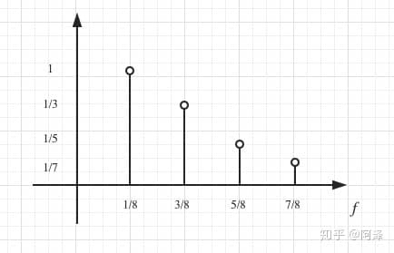
从下图可感受时域信息到频域信息的转化。
- 时域：时间和振幅的关系图，横坐标是时间，纵坐标是振幅。
- 频域：频率和振幅的关系图，横坐标是频率，纵坐标是振幅。
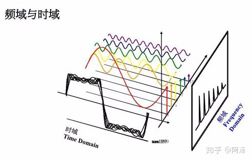
三角函数系：
正交基满足 \[ \begin{aligned} &\begin{cases} \int_{-\pi}^{\pi}{\cos}(mx)\cos\mathrm{(}nx)dx=\pi ,& m=n,m,n\ge 1\\ \int_{-\pi}^{\pi}{\cos}(mx)\cos\mathrm{(}nx)dx=0,& m\ne n,m,n\ge 1\\ \end{cases}\\ &\begin{cases} \int_{-\pi}^{\pi}{\sin}(mx)\sin\mathrm{(}nx)dx=\pi ,& m=n,m,n\ge 1\\ \int_{-\pi}^{\pi}{\sin}(mx)\sin\mathrm{(}nx)dx=0,& m\ne n,m,n\ge 1\\ \end{cases}\\ &\int_{-\pi}^{\pi}{\cos}(mx)\sin\mathrm{(}nx)dx=0,\quad m,n\ge 1\\ &\int_{-\pi}^{\pi}{\cos}(nx)dx=0,\quad n\ge 1\\ &\int_{-\pi}^{\pi}{\sin}(nx)dx=0,\quad n\ge 1\\ \end{aligned} \]
因此，\(1,\;cos x,\;sin x,\;cos 2x,\;sin 2x,\;cos nx,\;sin nx\) 构成一组标准正交基。任何不同的两个函数的乘积在区间 \([-T，T]\) 上的积分等于 0。
系数求解：
通过将右端的级数逐项积分，等式两端同时乘以对应三角函数，利用正交性抵消，求解系数 \(a_0, a_1, b_1\cdots\) ，称其为「傅里叶级数」。
2.4 傅里叶变换 | Fourier Transformer
前述的傅里叶级数适用于非正弦周期函数的变换，但现实中大部分函数都是非周期的，接下来讨论涉及到非周期性函数的方法。
在介绍非周期性函数之前，首先介绍下欧拉公式。
考虑横轴为 1，纵轴为虚单位 i 的坐标系，图上任意一点都可以表示为 \(cos\theta + isin\theta\)，根据欧拉公式，可以写成： \(cos\theta + isin\theta = e^{i\theta}\)，其含义为找到权重为正余弦的两个正交基（实部和虚部）
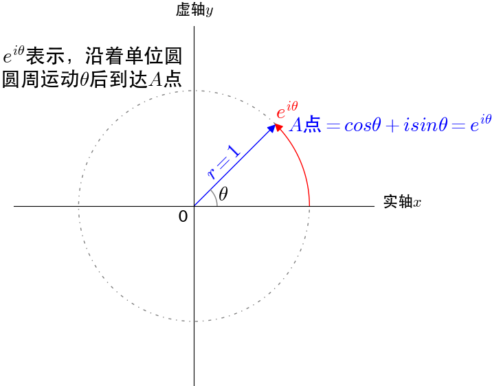
以时间 t 为横坐标，则可以记录到坐标点 A 映射在虚轴的运动轨迹，图中体现了频域和时域的相互转化。
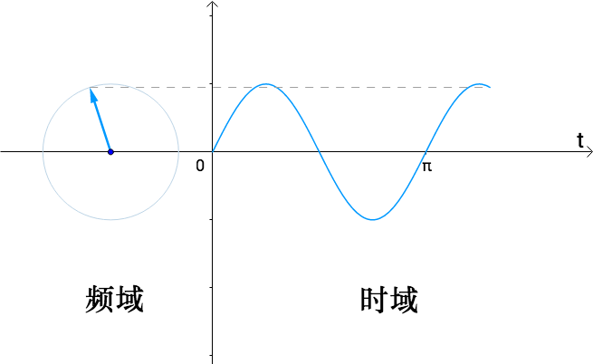
回到非周期函数的傅立叶变换的讨论，可以将非周期函数考虑为周期无穷大的函数，考虑频域中的横坐标：\(f=\frac{1}{T}\)，当周期 T 无穷大时，频域图就从离散点变为连续的曲线，如下图所示。
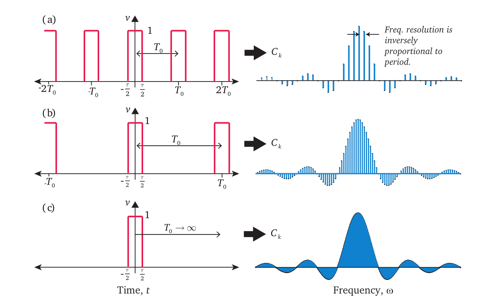
- 复数形式：傅里叶级数展开公式中有正弦波，也有余弦波，画频域图也不方便，通过欧拉公式，可以修改为复数形式：
\[ f(x)=\sum_{n=-\infty}^{\infty} c_n \cdot e^{i \frac{2 \pi n}{T} x} \]
- 逆傅里叶变换公式 如下：复数形式也可以理解为向量， \(e^{i \frac{2 \pi n}{T} x}\) 是基， \(c_n\) 是该基下的坐标。从数学角度， \(f(x)\) 是函数 \(f\) 在 \(x\) 处的取值，所有基都对该处取值有贡献，即把每个 \(F(w)\) 投影 到 \(e^{i w x}\) 基方向上分量累加起来，得到的就是该点处的函数值。
\[ f(x)=\int_{-\infty}^{\infty} F(w) e^{i w x} d w=\sum_w F(w) e^{i w x} \]
- 傅立叶变换 (Fourier Transform，FT) 公式如下，其中， \(e^{-i w t}\) 是一组正交基的组合。「实数部分表示振幅」，「虚数部分表示相位」。从数学角度， \(F(w)\) 就是每个基下对应的坐标值，所有的 \(x\) 对该基都有贡献，即把每个\(f(x)\) 投影到 \(e^{-iwx}\) 基方向上的分量全部累加起来，得到的就是该基方向的坐标值。本质上是将函数 \(f(x)\) 映射到了以 \(e^{-iwx}\) 为基向量的空间中。
\[ F(w)=\frac{1}{2 \pi} \int_{-\infty}^{\infty} f(x) e^{-iwx} d x \]
- 相互转换：
\[ f(x)⇔F(w) \]
一个是函数，一个是向量（频域曲线纵坐标构成的向量，基为频域曲线横坐标对应的的基函数）。
2.5 图的傅里叶变换
- 传统的傅里叶变换
\[ F(k)=\frac{1}{2 \pi} \int_{-\infty}^{\infty} f(x) e^{-i k x} d x \approx\left\langle f, e^{-i k x}\right\rangle \]
\(F(k)\) 是傅里叶系数（即频率为 \(k\) 时的振幅值）。约等号去掉了常数系数，同时 \(x\) 为离散变量 时，离散积分等于内积。\(e^{-i k x}\) 为 Fourier Basis。可以证明 \(e^{-i k x}\) 是拉普拉斯算子的特征函数（满足特征方程 \(A V=\lambda V)\) ，证明: \[ \Delta e^{-i k x}=\frac{\partial e^{-i k x}}{\partial x^2}=-k^2 e^{-i k x} \]
- 在Graph上作类比，设 \(\phi_k\) 是图拉普拉斯算子 \(\boldsymbol{L}\) 的特征向量，（满足 \(\boldsymbol{L} \phi_k=\lambda_k \phi_k\) ）。在 Graph中， \(\Delta=\boldsymbol{L}\), \(e^{-i k x}=\phi_{\boldsymbol{k}}\)。因此，为了在Graph上进行傅里叶变换，可以把传统傅里叶变换中的基 \(e^{-i k x}\) 换成 \(\phi_{\boldsymbol{k}}\) （是线性无关的正交向量）。 \[ F(\lambda_k)=\left\langle f, \phi_\boldsymbol{k}\right\rangle\\ \] 矩阵形式的图傅里叶变换： \[ \hat{\boldsymbol{f}} = \boldsymbol{\Phi}^T \boldsymbol{f} \] 迁移到Graph上的逆傅里叶变换 \[ f_i= \sum_{k=1}^n \hat{f}_k (\boldsymbol{\phi_{k}}^T )_i \] 推广到矩阵形式， \[ \boldsymbol{f} = \boldsymbol{\Phi} \boldsymbol{\hat{f}} \]
| 传统傅里叶变换 | 图傅里叶变换 |
|---|---|
| 频率（\(k\)） | 特征值（\(\lambda_k\)） |
| 正弦函数 \(e^{-i k x}\) | 特征向量 \(\phi_\boldsymbol{k}\) |
| 振幅 \(F(k)\) | 振幅 \(F(\lambda_k)\) |
3 GNN 模型架构 | Model
GNN 理论基础是不动点理论，被划分成 空域（Spatial-based GNN） 和 谱域（Spectral-based GNN） 两大类，空域模型不需要矩阵特征分解，能直接在空域视角进行矩阵计算；谱域模型则从信号处理的角度实现 GNN。
3.1 状态更新与输出
在一个图结构中，每一个节点由它自身的特征以及与其相连的节点特征来定义该节点。GNN的目标是学习得到每个结点的图感知的隐藏状态 \(\mathbf{h}_v\) (state embedding)
GNN通过迭代式更新所有结点的隐藏状态来实现，在 \(t+1\) 时刻，结点 \(v\) 的隐藏状态按照如下 方式更新: \[ \begin{aligned} \mathbf{h}_v^{t+1}&=f\left(\mathbf{x}_v, \mathbf{x}_c o[v], \mathbf{h}_n^t e[v], \mathbf{x}_n e[v]\right)\\ o_v &= g(h_v,x_v) \end{aligned} \] 用 \(\mathbf{x}_v\) 表示结点 \(\mathrm{V}\) 的特征；连接两个结点的边也有自己的特征， \(\mathbf{x}_{(v, u)}\) 表示结点 \(\mathrm{v}\) 与结点 \(\mathrm{u}\) 之间边的特征。
- \(f\) 就是隐藏状态的状态更新函数，也被称为局部转移函数 (local transaction function)，这个函数在所有节点中共享，带有参数。
- 公式中的 \(\mathbf{x}_c o[v]\) 指 的是与结点 \(v\) 相邻的边的特征
- \(\mathbf{x}_n e[v]\) 指的是结点 \(v\) 的邻居结点的特征
- \(\mathbf{h}_n^t e[v]\) 则指邻居结点在 \(t\) 时刻的隐藏状态。
- \(g\) 又被称为局部输出函数(local output function)，用于描述输出的产生方式。
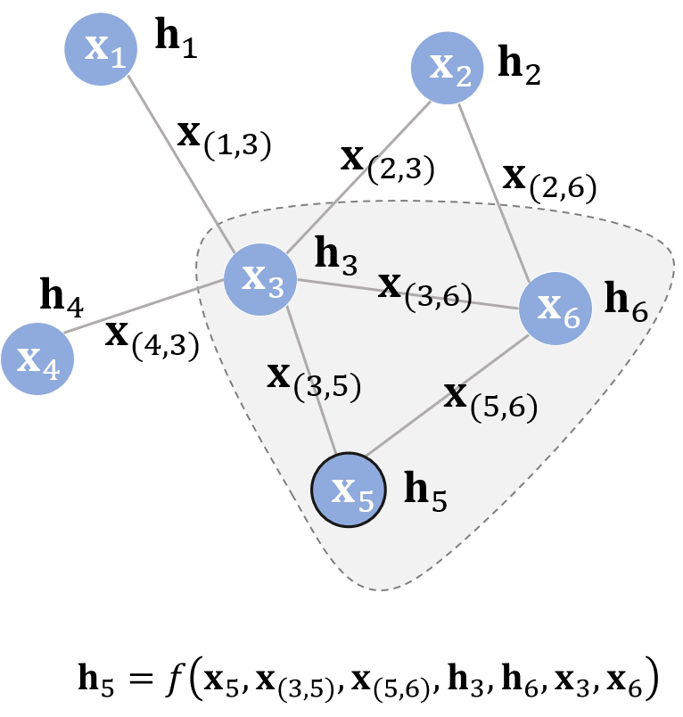
更新公式的含义：不断地利用当前时刻邻居结点的隐藏状态作为部分输入来生成下一时刻中心结点的隐藏状态，直到每个结点的隐藏状态变化幅度很小，整个图的信息流动趋于平稳。至此，每个结点都“知晓”了其邻居的信息。
更新至收敛的条件：通过两个时刻 \(p\)范数的差值是否小于某个阈值 \(\epsilon\) 来判定的 \[ ||H^{t+1}||_2−||H^t||_2<\epsilon \]
用 \(F\) 表示若干个 \(f\) 堆叠得到的一个函数，也称为全局更新函数，那么图上所有结点的状态更新公式可以写成： \[ H^{t+1}=F(H^t,X) \]
- 不动点(the fixed point)理论指的是：只要 \(F\) 是个压缩映射(contraction map)， \(H^0\) 经过不断迭代都会收敛到某一个固定的点，称之为不动点。
- 压缩映射 的含义：任意两个点 \(x, y\) 在经过 \(F\) 映射后变为 \(F(x), F(y)\) 。 \(d(F(x), F(y)) \leq c d(x, y), 0 \leq c<1\) 。 经过 \(F\) 变换后的新空间一定比原先的空间要小，原先的空间被压缩了。想象这种压缩的过程不断进行，最终就会把原空间中的所有点映射到一个点上。
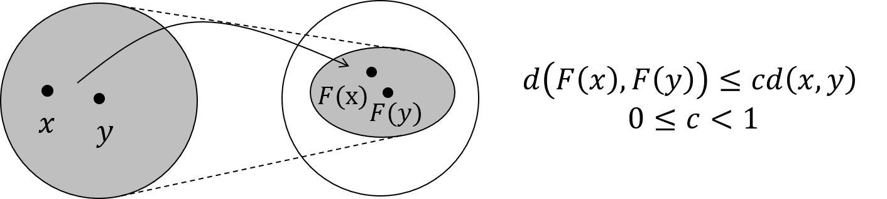
3.2 模型学习
通过模型学习，让 \(f\) 接近压缩映射。使用目标信息（\(t_v\)表示特定节点的标签）来进行监督学习，loss定义如下： \[ loss=\sum_{i = 1}^{p}(t_i - o_i) \] 根据 前向传播计算损失、反向传播计算梯度 进行学习
- 状态 \(h_v^t\) 按照迭代方程更新 \(T\) 个轮次，直至收敛。
- 对于有监督信号的结点，将其隐藏状态通过 \(g\) 得到输出，进而算出模型的损失。
- 得到的 \(H\) 会接近不动点的解 $H(T)≈H $。
- 反向传播计算 \(f\) 和 \(g\) 对 \(h_v^0\) 的梯度，用于更新模型的参数。
3.3 GNN vs RNN
将循环神经网络与图神经网络对比，存在以下不同点：
假设在GNN中存在三个结点 \(x_1, x_2, x_3\)，在RNN中有一个序列 \((x_1, x_2, x_3)\)。
- 输入：GNN每次时间步的输入都是所有结点 \(v\) 的特征，而 RNN 每次时间步的输入是该时刻的输入。同时，时间步之间的信息流也不相同，前者由边决定，后者则由序列的读入顺序决定。
- 训练过程：GNN的基础理论是不动点理论，因此其沿时间展开的长度是动态的，根据收敛条件确定的，而RNN沿时间展开的长度就等于序列本身的长度。
- 训练目标：GNN目标是得到每个结点稳定的隐藏状态，只有在隐藏状态收敛后才能输出；而RNN的每个时间步上都可以输出，比如语言模型。
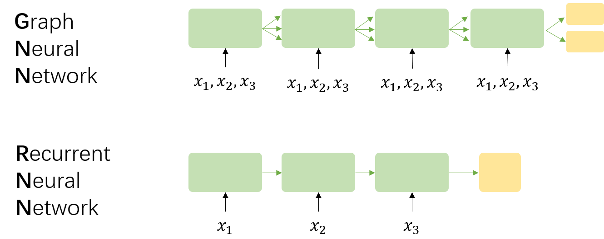
3.4 局限性
原始 GNN 的核心观点是通过结点信息的传播使整张图达到收敛，在其基础上再进行预测。问题在于：
- GNN只将边作为一种传播手段，但并未区分不同边的功能。虽然可以在特征构造阶段 \((x_{(u,v)})\) 为不同类型的边赋予不同的特征，但相比于其他输入，边对结点隐藏状态的影响有限。并且GNN没有为边设置独立的可学习参数，无法通过模型学习到边的某些特性。
- GNN应用在 节点表示 的场景中，使用不动点理论并不合适。因为基于不动点的收敛会导致结点之间的隐藏状态间存在较多信息共享，不动点的向量表示分布在数值上会非常的平滑，属于结点自身的特征信息匮乏。
4 Spatial-based GNN
由于传统的卷积不能直接用在图上，主要的难点在于邻居结点数量不固定。
思想：
aggregate: 用 neighbor feature 更新下一层的 hidden state
readout: 将所有 nodes 的 feature 集合起来代表整个 graph
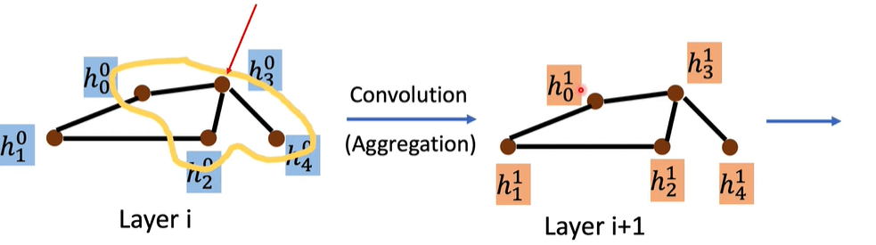
具体的聚合方式
| Aggregation | Method |
|---|---|
| Sum | NN4G |
| Mean | DCNN, DGC, GraphSAGE |
| Weighted sum | MoNET, GAT, GIN |
| LSTM | GraphSAGE |
| Max Pooling | GraphSAGE |
4.1 消息传递网络 | MPNN
消息传递网络（Message Passing Neural Network）将空域卷积分解为两个过程：消息传递与状态更新操作，分别由$M_l(⋅) $ 和 \(U_l(⋅)\) 函数完成。将结点 \(v\) 的特征 \(x_v\) 作为其隐藏状态的初始态 \(h_0^v\) 后，空域卷积对隐藏状态的更新由如下公式表示： \[ \mathbf{h}_{v}^{l+1}=U_{l+1}(\mathbf{h}_v,\sum_{u{\in}ne[v]}M_{l+1}(\mathbf{h}_v^l,\mathbf{h}_u^l,\mathbf{x}_{vu})) \] 其中 \(l\) 代表图卷积的第 \(l\) 层，上式的物理意义是：收到来自每个邻居的的消息 \(M_{l+1}\) 后，每个结点如何更新自己的状态。
4.2 GraphSAGE
GraphSAGE 全称为 Graph Sample and Aggregate。区别于传统的全图卷积（将所有结点放入内存/显存中），GraphSAGE 利用采样 (Sample) 部分结点的方式进行学习。当然，即使不需要整张图同时卷积，GraphSage仍然需要聚合邻居结点的信息，即 aggregate 的操作。这种操作类似于 MPNN 中的消息传递过程。
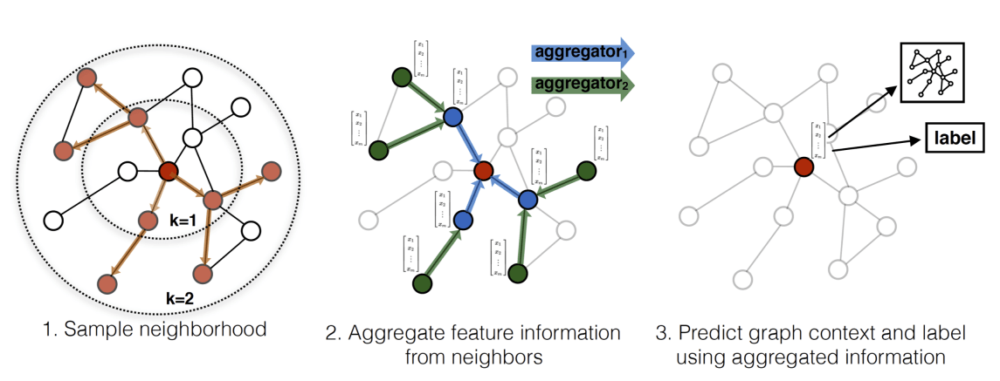
采样过程
- 在图中随机采样若干个结点，结点数为
batch_size。对于每个结点，随机选择固定数目的邻居结点（一阶邻居，或是二阶邻居）构成进行卷积操作的图。 - 将邻居结点的信息通过 aggregate 函数聚合起来更新刚才采样的结点。
- 计算采样结点处的损失。如果是无监督任务，希望图上邻居结点的编码相似；如果是监督任务，可根据具体结点的任务标签计算损失。
- 在图中随机采样若干个结点，结点数为
更新公式为 \[ \mathbf{h}_{v}^{l+1}=\sigma(\mathbf{W}^{l+1}\cdot aggregate(\mathbf{h}_v^l,\{\mathbf{h}_u^l\}),{\forall}u{\in}ne[v]) \]
聚类器
GraphSAGE 的设计重点就放在了 aggregate 函数的设计上。它可以是不带参数的max，mean，也可以是带参数的如 LSTM 的等神经网络。核心的原则是需要可以处理变长的数据。
GraphSAGE 适用于 Inductive learning，扩展到新的节点和新的图，因为直接学习的采样过程和加权求和方式，并没有利用图的拉普拉斯矩阵。
5 Spectral-based GNN
5.1 动机
动机：既然无法直接在时域进行卷积，就将图信号映射到频域后再做卷积操作，将卷积推广到Graph等Non-Euclidean数据上。
将图和卷积的 Filter 都做傅立叶变换 Fourier Transform，对二者经过傅立叶变换的结果做 Multiplication，最后再把 Multiplication 的结果做 Inverse Fourier Transform 变回去。
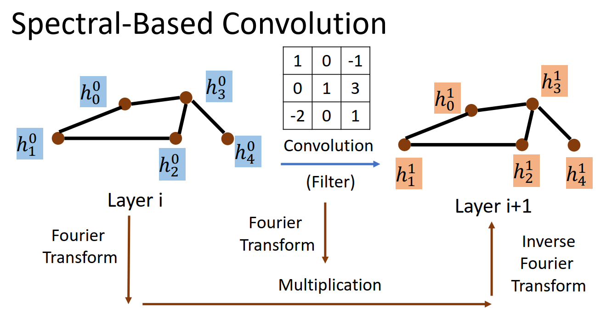
5.2 卷积定理
Spectral-based 的方法主要是基于「2.4 图傅里叶变换」。
思想
- Convolution —— Fourier：在适当条件下，两个信号的卷积的傅立叶变换 = 各自求傅立叶变换转为频域后的点积，即对于函数 f 与卷积核 h两者的卷积是其函数傅立叶变换乘积的逆变换。具体公式如下，
图卷积的定义： \[ (\boldsymbol{f} * \boldsymbol{h})_{\mathcal{G}}=\boldsymbol{\Phi} \operatorname{diag}\left[\hat{h}\left(\lambda_1\right), \ldots, \hat{h}\left(\lambda_n\right)\right] \boldsymbol{\Phi}^T \boldsymbol{f} \] 其中
- 图 \(\boldsymbol{f}\) 的傅里叶变换为 \(\hat{\boldsymbol{f}}=\boldsymbol{\Phi}^T \boldsymbol{f}\)
- 卷积核的图傅里叶变换: \(\hat{h}=\left(\hat{h}_1, \ldots, \hat{h}_n\right)\) ，按照矩阵形式就是 \(\hat{\boldsymbol{h}}=\boldsymbol{\Phi}^T \boldsymbol{h}\)
\[ \hat{h}_k=\left\langle h, \phi_k\right\rangle, k=1,2 \ldots, n \]
- 求傅里叶变换向量 \(\hat{f} \in \mathbb{R}^{N \times 1}\) 和 \(\hat{h} \in \mathbb{R}^{N \times 1}\) 的element-wise乘积，等价于将 \(h\) 组织成 对角矩阵，即 \(\operatorname{diag}\left[\hat{h}\left(\lambda_k\right)\right] \in \mathbb{R}^{N \times N}\) ，然后再求 \(\operatorname{diag}\left[\hat{h}\left(\lambda_k\right)\right]\) 和 \(\boldsymbol{f}\) 矩阵乘法。
- 求上述结果的逆傅里叶变换，即左乘 $ $
目的：
深度学习中的卷积就是要设计 trainable 的卷积核，从公式可以看出，就是要设计 \(\operatorname{diag}\left[\hat{h}\left(\lambda_1\right), \ldots, \hat{h}\left(\lambda_n\right)\right]\) 。
5.3 GCN | 图卷积网络
图卷积的本质是想找到适用于图的可学习卷积核。输入的是整张图，在Convolution Layer 1里，对每个结点的邻居都进行一次卷积操作，并用卷积的结果更新该结点；然后经过激活函数，然后再过一层卷积层Convolution Layer 2与一层激活函数；反复上述过程，直到层数达到预期深度。
GCN vs GNN
GCN是多层堆叠，上图中的
Layer 1和Layer 2的参数是不同的；GNN是迭代求解，可以看作每一层Layer参数是共享的。
第一代 GCN Spectral Networks and Locally Connected Networks on Graphs：可根据「5.2 卷积定理」得到公式
简单粗暴地把 \(\operatorname{diag}\left[\hat{h}\left(\lambda_1\right), \ldots, \hat{h}\left(\lambda_n\right)\right]\) 转化成直接对卷积核 \(\operatorname{diag}\left[\theta_1, \ldots, \theta_n\right]\)学习 ，不需要再将卷积核进行傅里叶变换，直接将变换后的参数进行学习。 \[ \boldsymbol{y}_{output} = \sigma(\boldsymbol{\Phi} \boldsymbol{g}_{\theta} \boldsymbol{\Phi}^T \boldsymbol{x})=\sigma(\boldsymbol{\Phi} \text{diag}[\theta_1,…,\theta_n] \boldsymbol{\Phi}^T \boldsymbol{x}) \] 其缺陷在于：
- 每一次前向传播，都要计算 \(\Phi\)，\(diag(\theta_n)\) 及 \(\Phi^T\) 三者的矩阵乘积，且需要对拉普拉斯矩阵 \(L\) 进行谱分解求 \(\boldsymbol{\Phi}\)，Graph很大时复杂度较高
- 卷积核不具有spatial localization，最终经过多次矩阵相乘，大部分位置元素不为0，是 global 全连接的卷积核。
- 卷积核的参数为 \(n\)
第二代 GCNConvolutional Neural Networks on Graphs with Fast Localized Spectral Filtering ：\(k\) 阶多项式
把 \(\hat{h}\left(\lambda_l\right)\) 设计为 \(\sum_{k=0}^K \theta_k \lambda_l^k\)。图傅里叶变换是关于特征值（频率）的函数\(F\left(\lambda_1\right), \ldots, F\left(\lambda_n\right)\), 即 \(F(\boldsymbol{\Lambda})\) ，将上述卷积核 \(\boldsymbol{g}_\theta\) 写作 \(\boldsymbol{g}_{\boldsymbol{\theta}}(\boldsymbol{\Lambda})\) ，将 \(\boldsymbol{g}_{\boldsymbol{\theta}}(\boldsymbol{\Lambda})\) 定义成如下 \(k\) 阶多项式形式： \[ \boldsymbol{g}_{\boldsymbol{\theta}^{\prime}}(\boldsymbol{\Lambda}) \approx \sum_{k=0}^K \theta_k^{\prime} \boldsymbol{\Lambda}^k \] 代入可以得到: \[ \begin{aligned} \boldsymbol{g}_{\boldsymbol{\theta}^{\prime}} * \boldsymbol{x} & \approx \boldsymbol{\Phi} \sum_{k=0}^K \theta_k^{\prime} \boldsymbol{\Lambda}^k \boldsymbol{\Phi}^T \boldsymbol{x} \\ &=\sum_{k=0}^K \theta_k^{\prime}\left(\mathbf{\Phi} \boldsymbol{\Lambda}^k \boldsymbol{\Phi}^T\right) \boldsymbol{x} \\ &=\sum_{k=0}^K \theta_k^{\prime}\left(\mathbf{\Phi} \boldsymbol{\Lambda} \boldsymbol{\Phi}^T\right)^k \boldsymbol{x} \\ &=\sum_{k=0}^K \theta_k^{\prime} \boldsymbol{L}^k \boldsymbol{x} \end{aligned} \]
其中 \(\theta_0, \theta_1, \ldots,\theta_k\) 是需要学习的参数，通过初始化赋值然后利用误差反向传播进行调整。
- 优点在于
- 卷积核只有 \(k\) 个参数，一般 \(k\) 远小于 \(n\)，参数的复杂度被大大降低了。
- 该公式无需做特征分解，直接对拉普拉斯矩阵 \(L\) 进行 \(k\) 次方计算即可，降低时间复杂度
- 卷积核具有很好的 spatial localization，矩阵 \(k\) 次方的物理含义：图的「 k-hop 连通性」，元素对应1个节点经过 \(k\) 步能否到达另一个顶点，非 0 的话可达，为 0 不可达。在卷积核中， \(k\) 就是对应的 receptive field。每次卷积会将中心顶点 K-hop neighbor 上的 feature 进行加权求和，权系数就是 \(\theta_k\)
- ChebNet：引入切比雪夫展开式，切比雪夫多项式是以递归方式定义的一系列正交多项式序列。利用\(T_k(\Lambda)\) 的 \(k\) 阶截断获得对 \(L^k\) 的近似，进而获得对 \(\boldsymbol{g}_{\boldsymbol{\theta}}(\boldsymbol{\Lambda})\) 的近似，来降低时间复杂度。 \[ \boldsymbol{g}_{\boldsymbol{\theta^{\prime}}}(\boldsymbol{\Lambda}) \approx \sum_{k=0}^K \theta_k^{\prime} T_k(\tilde{\boldsymbol{\Lambda}}) \] 切比雪夫多项式 \(T_k(\widetilde{\Lambda})\) 使用递归的方式进行定义 \[ T_0(\widetilde{\Lambda})=\mathrm{I}, T_1(\widetilde{\Lambda})=\widetilde{\Lambda}, T_k(\widetilde{\Lambda})=2 \widetilde{\Lambda} T_{k-1}(\widetilde{\Lambda})-T_{k-2}(\widetilde{\Lambda}) \] where \(\tilde{\Lambda}=\frac{2 }{\lambda_{\max }}\Lambda-\mathrm{I}, \quad \tilde{\lambda} \in[-1,1]\)
- 优点在于
第三代GCN Semi-Supervised Classification with Graph Convolutional Networks ：进一步简化 ChebNet
在 ChebNet 的基础上取 \(k=1, \lambda_{max}=2,\theta = \theta_0^{\prime}=-\theta_1^{\prime}\)，此时模型是1阶的 first-order proximity。即每层卷积层只考虑了直接邻域，类似CNN中 3*3 的卷积核 \[ \begin{aligned} \boldsymbol{g}_{\boldsymbol{\theta^{\prime}}} * \boldsymbol{x} &\approx \theta_0^{\prime} \boldsymbol{x} + \theta_1^{\prime}(\boldsymbol{L}- \boldsymbol{I}_n) \boldsymbol{x} \\ &= \theta_0^{\prime} \boldsymbol{x} - \theta_1^{\prime}(\boldsymbol{D}^{-1/2} \boldsymbol{A} \boldsymbol{D}^{-1/2}) \boldsymbol{x}\\ &= \theta(\boldsymbol{I_n} + \boldsymbol{D}^{-1/2} \boldsymbol{A} \boldsymbol{D}^{-1/2}) \boldsymbol{x} \end{aligned} \] 推导中使用了 归一化的拉普拉斯矩阵 \[ \boldsymbol{L}=\boldsymbol{D}^{-1/2}(\boldsymbol{D}-\boldsymbol{A})\boldsymbol{D}^{-1/2}=\boldsymbol{I_n}-\boldsymbol{D}^{-1/2} \boldsymbol{A} \boldsymbol{D}^{-1/2} \] 此时只有两个参数，即每个卷积核只有2个参数，\(\boldsymbol{A}\) 是邻接矩阵。
为什么要归一化？:
采用加法规则时，对于度大的节点特征越来越大，而对于度小的节点却相反，这可能导致网络训练过程中梯度爆炸或者消失的问题。使用归一化方式，将不再单单地对领域节特征点取平均，它不仅考虑了节点 \(i\) 的度，也考虑了邻接节点 \(j\) 的度，当邻接节点 \(j\) 度数较大时，在聚合时贡献地会更少。
6 Benchmark tasks
GNN 常应用的任务有以下几类：
classification
- Graph type classification
Edge classification: Traveling Salesman Problem
- Semi-supervised node classification
- pattern recognition
- Semi-supervised graph clustering
- Regression
- Graph representation learning
Link prediction
7 References
- 蘑菇先生学习记 | 图卷积神经网络理论基础 http://xtf615.com/2019/02/24/gcn/
- SivilTaram | 漫谈图神经网络模型 https://www.cnblogs.com/SivilTaram/p/graph_neural_network_1.html
- 如何理解 Graph Convolutional Network（GCN）？ - superbrother的回答 - 知乎 https://www.zhihu.com/question/54504471/answer/332657604
- 如何理解傅里叶变换公式？ - 苗华栋的回答 - 知乎 https://www.zhihu.com/question/19714540/answer/1119070975